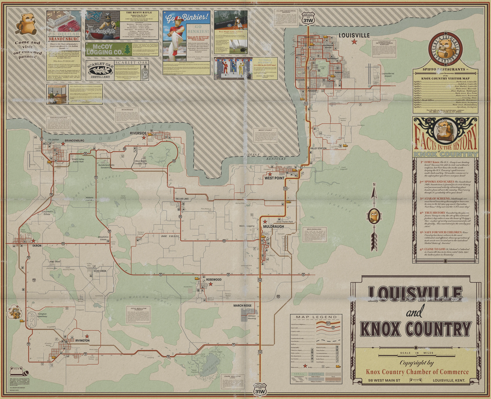
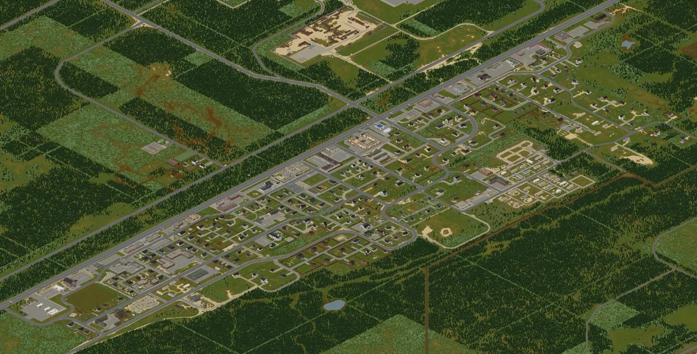
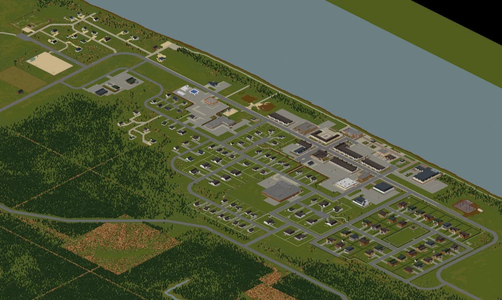
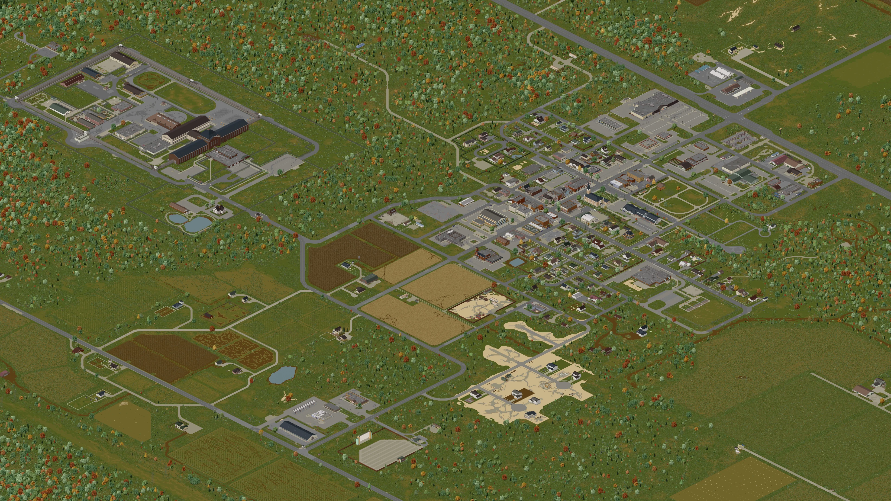
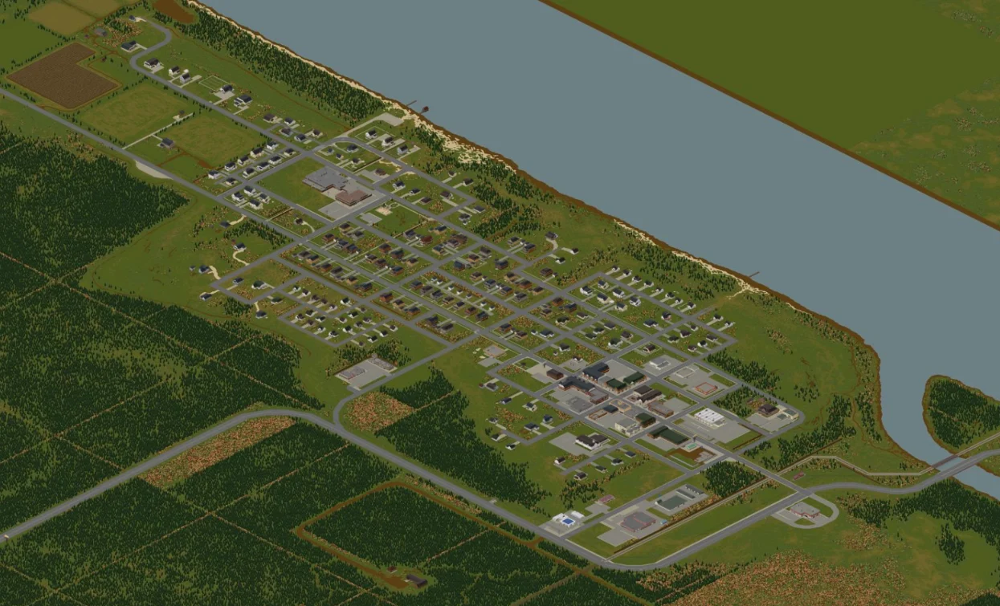

Muldraugh es una ciudad de bajos ingresos y bajos recursos, con gran parte de su infraestructura notablemente antigua y en mal estado. Muchas de sus tiendas fueron abandonadas y desalojadas antes del Evento Knox, y muchas de ellas estaban en venta o arrendamiento. Muchos residentes vivían por debajo de la línea de pobreza y dependían del comedor social de Muldraugh

Riverside es una ciudad suburbana de tamaño moderado situada a orillas del río Ohio, lo que la convierte en una excelente zona para los jugadores que desean un suministro de agua adecuado y/o pescar con regularidad. También hace que sea fácil llegar a la ciudad desde West Point o Brandenburg simplemente siguiendo el río.

Rosewood es una pequeña ciudad en el sur de Knox Country y la ciudad de desove más pequeña que se puede seleccionar de forma predeterminada. Está situado a lo largo de Kentucky 60, con una intersección con N Main Street que conduce directamente a la ciudad desde el norte. La ciudad está rodeada de densos bosques por casi todos lados y las granjas rurales dominan las afueras del sur.

West Point es la ciudad de aparición más oriental, con Louisville a solo un corto trayecto en auto. Sin embargo, es una de las zonas más peligrosas de todo Knox Country. Esto se debe a una gran población de zombis repartidos por toda la ciudad, junto con una relativa escasez de armas cuerpo a cuerpo de alta calidad en los suburbios. No se recomienda el desove en West Point para los nuevos jugadores.